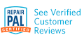

Services
A & P Specialties is Portland’s source for quality auto repair and first class service. We have been in business for over 30 years and our experienced auto technicians will handle any of your automotive needs. We specialize in German automobile repair, service and tuning of Audi, Porsche, and Volkswagen. We backup our work with a 36 month / 36,000 mile warranty.
- Brakes
- Diagnostics
- Emissions
- Engine Repair
- Fuel System Service
- Heating & Cooling
- Hose & Filter Replacement
- Muffler/Exhaust
- Oil Changes
- Preventative Maintenance
- Radiators
- Suspension
- Timing Belt Replacement
- Tires
- Tune Up
- Transmissions
- Wheel Alignment
- And So Much More
Call 503-254-7310 or stop in today - 707 SE 82nd Ave, Portland, OR 97216
Open 7:30 am - 5:30 pm, Monday - Friday
We work on a variety of both late and early model Porsche's, Audi's, and Volkswagen's. From tune-ups and scheduled maintenance, to complete rebuilds - A&P Specialties has you covered.
Porsche diagnostics, scheduled maintenance, and complete repair
Audi diagnostics, scheduled maintenance, and complete repair
We service all types of Volkswagens...
...from the Beetle to the Bus, and everything inbetween - Bug, Jetta, Golf, Passat, and more
Mike giving Alan a big thank you hug, before setting off on his road trip the Pebble Beach concourse. His 1976 911S ran flawlessly thanks to Alan's touch.
We service all years and types of Porsches
High Performance Porsche Service
356, 911, 914, 928, 944, Boxster, Cayman... if it's a Porsche, we're your mechanic & technician
A&P Specialties is an ASE and RepairPal Certified shop featuring an experienced and well trained team who are equipped with the state of the art tools and diagnostic equipment necessary for today's modern vehicles. 3 year / 36,000 mile warranty
A&P Specialties is an Authorized Bosch Service Center
707 SE 82nd Ave.
Portland, OR 97216
(503) 254-7310
Open 7:30 AM - 5:30 PM
Monday - Friday

36 Month/ 36,000 Mile Warrenty
